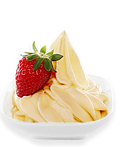

Sản Phẩm Truyền Thống

Sữa Chua Vị Kiwi
Hương vị thơm ngon của trái Kiwi xanh, nổi tiếng của đát nước New Zealand có trong Sữa chua vị Kiwi xanh đem đến một món ăn nhẹ Siêu ngon và tốt có hệ tiêu hóa. Xem chi tiết Số Lượng:
Sữa Chua Vị Xoài
Sữa chua xoài thích hợp cho mọi lứa tuổi, vì vậy hãy để cả gia đình quây quần bên nhau cùng thưởng thức món ăn thơm ngon, bổ dưỡng này. Xem chi tiết Số Lượng:
